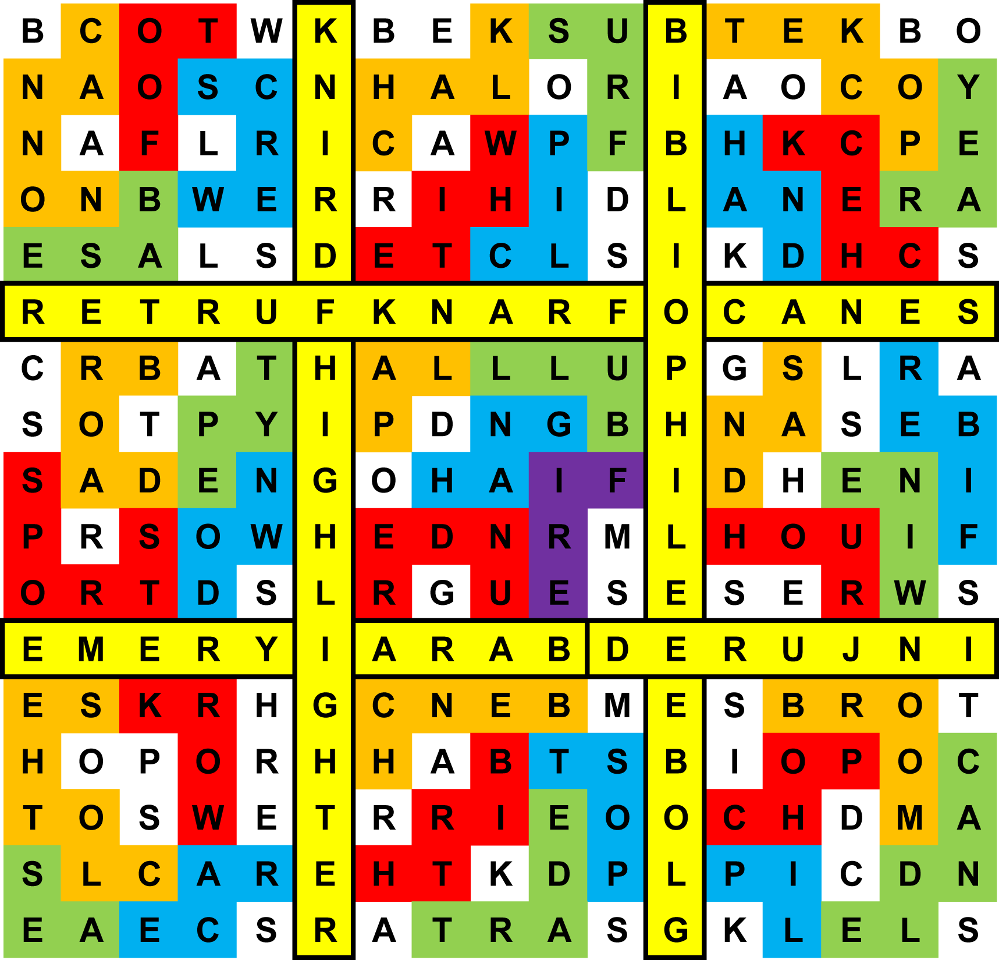

Author: Dan Katz
Although this looks like a word search, searching turns up very few words. However, there are some noteworthy words in the sixth and twelfth rows and columns; in fact, there are nine words which can fill those rows and columns with no intersection or overlap. These words also conspicuously start with the nine letters A through I, giving them a natural ordering.
Circling these words divides the rest of the grid into nine 5x5 grids, and the presence of the nine words, plus the 3x3 matrix of tuples below the grid, hopefully hint that these grids each need to be dealt with separately. (In addition, each of them has an S in the lower-right corner, further cluing they have something in common.)
While no long words can be found in these grids as word searches, each grid has several words hidden Boggle-style, moving left, right, up, and down, with no overlaps between words. There are some unintended words that can be found, but each correct set has something in common; all the members form compound words when placed before the same noun. The enumerations of the words in each box are given in the matrix.
Furthermore, the unused letters spell the plural of this noun, apart from one extraneous letter. For example, in the first grid, one can find BASE, CANNON, FOOT, and SCREW, all of which form words when BALL is added. The unused letters spell BWALLS, BALLS with an extra W. The grids are alphabetized by category.

Each of the categories can be associated with one of the nine original words, giving an ordering for the extra letters: